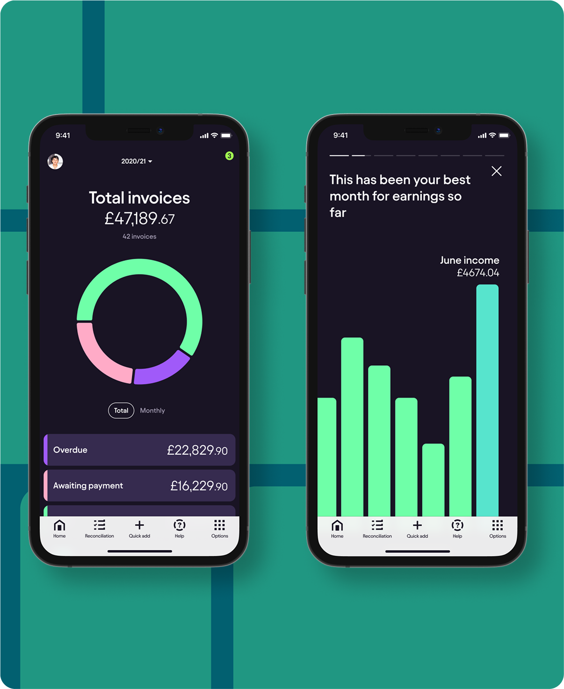
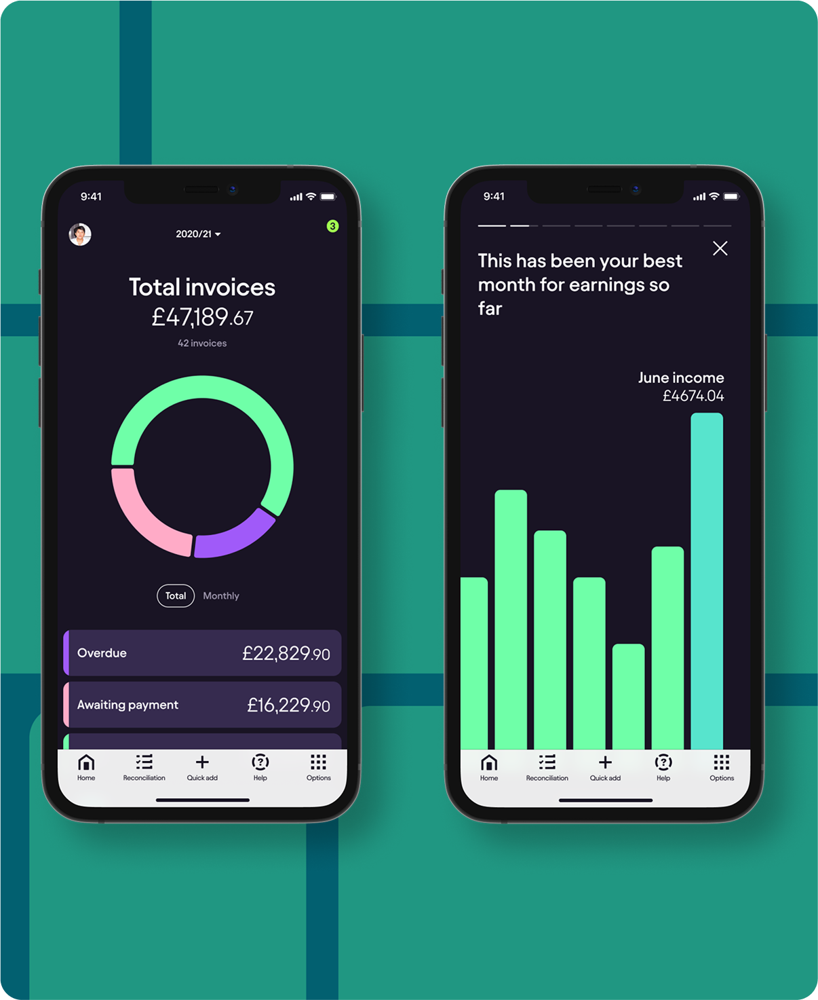

Real Time Tax
Our app will give you your live tax position which will be the actual tax amount owed across multiple income streams, to date. There will be no need to wait until the end of the year to see what you owe, taking all of the anxiety of the unknown away
All incoming and outgoing transactions will be updated in real time, along with any deductions or credits, which means users will have the most up to date figure every time they open the app.
For most people their tax bill can be their biggest outgoing. Waiting up to 20 months from the point of income to finding out the final tax bill can make things hard to plan
And with HMRC’s Making Tax Digital initiative, businesses will soon be required to report their income every quarter - making up to date record keeping a necessity
Live tracking of the tax return
Once submitted, users will be kept in the loop on the progress of their return, every step of the way. Our system is integrated with HMRC and alerts will be sent to the user to take action where and when required.
 
